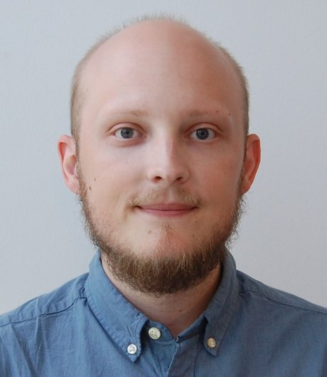
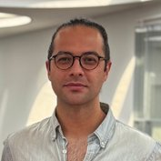
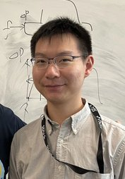
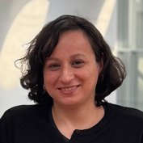
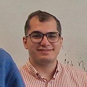
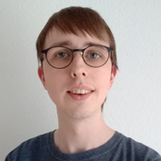
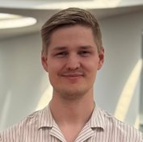

Current Members

Joe Alexandersen
Associate Professor — Group Leader
Joe leads the MSOE group. His research spans topology optimisation, conjugate heat transfer, fluid dynamics, and high-performance computing. He received his Ph.D. from the Technical University of Denmark in 2016.
See Biography for full details.

Baris Burak Kanbur
Assistant Professor
Baris works on computational and experimental fluid mechanics and heat transfer, leading the experimental side of the group's activities in close collaboration with the Fluid Mechanics research area at SDU.

Hao Li
Postdoctoral Researcher
Hao works on homogenisation-based topology optimisation methods for microchannel heat exchangers, with a focus on space-time adaptive mesh refinement to reduce computational cost. He is funded by the Marie Skłodowska-Curie Postdoctoral Fellowship (ADeHEx project) with a secondment at Brown University (CRUNCH group, Prof. George Karniadakis).
Funding: Marie Skłodowska-Curie Postdoctoral Fellowship

Sarah Nataj
Postdoctoral Researcher
Sarah develops space-time spectral element methods for topology optimisation of transient heat conduction problems, contributing to the group's COMFORT project.
Funding: DFF Sapere Aude Research Leader (COMFORT)

Amirhossein Bayat
Ph.D. Student
Amirhossein's research focuses on topology optimisation for high heat-flux cooling and turbulent flow, with applications to fusion reactor first-wall components and high-performance electronics cooling (HiHeat project).
Funding: HiHeat project (Feb. 2024 – Jan. 2027)

Magnus Højmose Appel
Ph.D. Student
Magnus develops time-parallel methods — including Parareal and space-time multigrid — for transient heat diffusion and topology optimisation, working towards order-of-magnitude speed-ups for time-dependent design problems (COMFORT project).
Funding: DFF Sapere Aude Research Leader (COMFORT, Sep. 2024 – Aug. 2027)

Morten Bjerre Jonathansen
Industrial Ph.D. Student
Morten applies computational morphogenesis to the design of high temperature-difference heat exchangers, addressing the coupled thermomechanical challenges of large temperature gradients in exhaust gas recirculators, Power-to-X applications, and thermal energy storage.
Funding: IFD & Vestas Aircoil (Mar. 2025 – Feb. 2028)
Haiyang Lei
Visiting Ph.D. Student
Haiyang is visiting from Central South University, China. His research focuses on RBF (radial basis function) methods for topology optimisation of turbulent flow problems.
Home institution: Central South University, China
Søren Schøler Sundall
Research Assistant
Søren assists with experimental fluid mechanics research in collaboration with Baris Burak Kanbur.
Current Thesis Students
Master Thesis Students
| Student(s) | Topic |
|---|---|
| Christian H Larsen & Jacob MS Andersen | Topology optimisation of electric motor cooling |
| Erik Detlefsen | Simulation of interactions between electromagnetic waves and tungsten tiles |
Bachelor Thesis Students
| Student | Topic |
|---|---|
| Ellen Kanstrup Larsen | Quantum computing for PDEs and optimisation |
Past Members
Researchers and students who have been part of the group.
Postdoctoral Researchers
- Yupeng Sun 2024–2025
Visiting Ph.D. Students
- Yupeng Sun 2021–2023
- Takamitsu Sasaki (Kyoto University) 2025
- Mojtaba Barzegari 2025
Research Assistants
- Magnus Højmose Appel 2024
- Mark Bjerre Müller Christensen 2023
Student Assistants
- David Vestergaard Pedersen 2022–2024
- Morten Andersen 2022–2024
- Oliver Steen Mæhle Sindahl 2022
- Daniel Kolbæk Thornild 2019–2020
Past Master Thesis Students
- Casper Skjold Buhrkall
- Kristian Søberg
- Jens Ole Jepsen
- Christopher Becker
- Mathias Arnløv Graversen
- Christian Buur Kej
- Victor Lindberg Brink